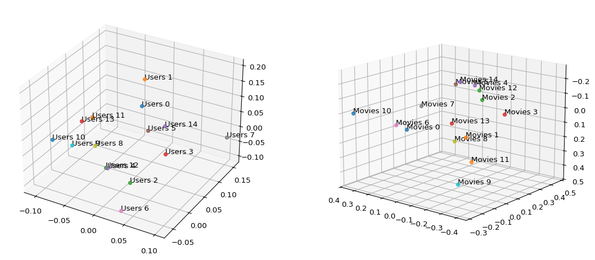

import numpy as np
import matplotlib.pyplot as plt
import pandas as pd
from mpl_toolkits.mplot3d import Axes3DLab 3. Singular Value Decomposition (SVD)
MATH 252: Applied Linear Algebra
Introduction
In this lab, we explore Singular Value Decomposition (SVD) and its practical application in building a movie recommendation system. SVD is a fundamental matrix factorization technique that decomposes any matrix into three components, revealing the underlying structure of the data.
The lab is divided into three main tasks:
- Implementing SVD from scratch using eigenvalue decomposition
- Analyzing movie rating data using SVD to understand user-movie relationships
- Building a recommendation system that predicts ratings and suggests movies to users
Let’s dive in! 🎬
Data Preparation
First, we import the necessary libraries. For this project, we’ll use: - NumPy for numerical computations and matrix operations - Matplotlib for data visualization - Pandas for handling the MovieLens dataset
Task 1: Implementing SVD
Understanding SVD
For any matrix \(A \in \mathbb{R}^{m \times n}\), the Singular Value Decomposition expresses it as:
\[A = U \Sigma V^T\]
where:
- \(U \in \mathbb{R}^{m \times m}\) is an orthogonal matrix containing the left singular vectors
- \(\Sigma \in \mathbb{R}^{m \times n}\) is a diagonal matrix of singular values (non-negative, arranged in descending order)
- \(V^T \in \mathbb{R}^{n \times n}\) is an orthogonal matrix containing the right singular vectors
The Algorithm
To compute SVD, we use the relationship between singular values and eigenvalues:
- Compute \(S_L = AA^T\) and \(S_R = A^TA\)
- Find eigenvalues and eigenvectors of \(S_L\) and \(S_R\)
- The singular values are \(\sigma_i = \sqrt{\lambda_i}\)
- Sort everything in descending order
Helper Function: Sorting Eigenvalues
def sort_vectors(eigenval, eigenvec):
sort_index = np.argsort(eigenval, kind='mergesort')[::-1]
return eigenval[sort_index], eigenvec[:, sort_index]Main SVD Implementation
def my_svd(A):
SL = A @ A.T
SR = A.T @ A
SL_val, SL_vec = np.linalg.eigh(SL)
SR_val, SR_vec = np.linalg.eigh(SR)
SL_val, U = sort_vectors(SL_val, SL_vec)
SR_val, V = sort_vectors(SR_val, SR_vec)
sing_val = np.sqrt(SL_val)
m, n = A.shape
r = min(m, n)
E = np.zeros((m,n))
E[np.arange(r), np.arange(r)] = sing_val[:r]
return U, E, V.TTesting the Implementation
Let’s test our SVD implementation on a random matrix:
\(\displaystyle B = \begin{bmatrix} 2 & 0\\ 0 & 1\\ 0 & 0 \end{bmatrix}\)
U, E, V_t = my_svd(B)\(\displaystyle U = \begin{bmatrix} 1.0 & 0.0 & 0.0\\ 0.0 & 1.0 & 0.0\\ 0.0 & 0.0 & 1.0 \end{bmatrix}\)
\(\displaystyle \sum_{}^{} = \begin{bmatrix} 2.0 & 0.0\\ 0.0 & 1.0\\ 0.0 & 0.0 \end{bmatrix}\)
\(\displaystyle V^t = \begin{bmatrix} 1.0 & 0.0\\ 0.0 & 1.0 \end{bmatrix}\)
U @ E @ V_tarray([[2., 0.],
[0., 1.],
[0., 0.]])\(\displaystyle U @ \sum_{}^{} @ V^t = \begin{bmatrix} 2.0 & 0.0\\ 0.0 & 1.0\\ 0.0 & 0.0 \end{bmatrix}\)
Mathematical Interpretation:
- \(U\) represents the user space (rows of A)
- \(V^T\) represents the item space (columns of A)
- \(\Sigma\) represents the importance of each latent factor
Task 2.a: Analyzing Movie Ratings with SVD
Loading the MovieLens Dataset
We’ll use the MovieLens small dataset, which contains movie ratings from various users.
file_path = 'ml-latest-small/ratings.csv'
df = pd.read_csv(file_path)
df_p = df.pivot(index='userId', columns='movieId', values='rating')Data Cleaning Strategy
The rating matrix is sparse — most users haven’t rated most movies. We need to handle missing values carefully:
df_p.dropna(thresh=150, axis=0, inplace=True)
df_p.dropna(thresh=100, axis=1, inplace=True)
fill_val = 2.5
df_p.fillna(fill_val, inplace=True)Why this approach?
- Users/movies with too few ratings don’t provide reliable patterns
- Filling with 2.5 (middle of 0-5 scale) assumes neutral preference
- This balances data availability with quality
Centering the Data
To focus on preference patterns rather than absolute ratings, we subtract each user’s mean rating:
r = df_p.values
user_mean = np.mean(r, axis=1)
r = r - user_mean.reshape(-1, 1)This transformation:
- Removes individual user bias (some users rate generously, others strictly)
- Highlights relative preferences
- Improves SVD quality
Applying SVD with Dimensionality Reduction
def task_2_a(A, k=0):
U, s, V_t = np.linalg.svd(A)
return U[:, :k], s[:k], V_t[:k, :]
k = 3
U, s, V_t = task_2_a(r, k)What does k=3 mean?
- We’re reducing the data to 3 latent dimensions
- These capture the most important patterns (e.g., “action lovers”, “drama enthusiasts”, “family-friendly”)
- Similar to PCA, but for collaborative filtering
Visualizing User and Movie Spaces
Now comes the exciting part — visualizing users and movies in 3D space! 🎨

Interpretation:
- Close users have similar taste
- Close movies are similar in nature
- Distance = dissimilarity in preferences/characteristics
- The 3 axes represent hidden “taste dimensions”
Task 2.b: Building a Movie Recommendation System
The Recommendation Algorithm
Our system works as follows:
- Fill missing values with column means (movie average ratings)
- Center the data by subtracting user means
- Apply SVD with automatic rank selection based on energy threshold
- Reconstruct the rating matrix
- Add back user means
- Extract predictions for unrated movies
Smart Rank Selection
Instead of manually choosing \(k\), we use explained variance:
def prediction(df, nan = None, k = 0.9):
nan = df.mean() if nan is None else nan
df = df.fillna(nan)
C = df.values
user_mean = np.mean(C, axis=1)
C = C - user_mean.reshape(-1, 1)
if k <= 1:
U, s, V_t = np.linalg.svd(C)
cum = np.cumsum(s**2) / np.sum(s**2)
m = np.argmax(cum >= k) + 1
U = U[:, :m]
s = s[:m]
V_t = V_t[:m, :]
else:
U, s, V_t = task_2_a(C, k)
E = np.zeros((U.shape[1], V_t.shape[0]))
r = s.shape[0]
E[np.arange(r), np.arange(r)] = s[:r]
K = (U @ E @ V_t) + user_mean.reshape(-1, 1)
return pd.DataFrame(K, columns=df.columns, index=df.index)Key Innovation: Explained Variance
\[\text{Explained Variance} = \frac{\sum_{i=1}^{k} \sigma_i^2}{\sum_{i=1}^{r} \sigma_i^2}\]
Setting \(k=0.9\) means: “Use the minimum number of factors that explain 90% of the variance”
Before
| movieId | 1 | 2 | 3 | 5 | 6 | 7 | 10 | 11 | 16 | 17 | ... | 115617 | 116797 | 119145 | 122882 | 122886 | 122904 | 134130 | 134853 | 139385 | 152081 |
|---|---|---|---|---|---|---|---|---|---|---|---|---|---|---|---|---|---|---|---|---|---|
| userId | |||||||||||||||||||||
| 1 | 4.0 | NaN | 4.0 | NaN | 4.0 | NaN | NaN | NaN | NaN | NaN | ... | NaN | NaN | NaN | NaN | NaN | NaN | NaN | NaN | NaN | NaN |
| 4 | NaN | NaN | NaN | NaN | NaN | NaN | NaN | NaN | NaN | NaN | ... | NaN | NaN | NaN | NaN | NaN | NaN | NaN | NaN | NaN | NaN |
| 5 | 4.0 | NaN | NaN | NaN | NaN | NaN | NaN | NaN | NaN | NaN | ... | NaN | NaN | NaN | NaN | NaN | NaN | NaN | NaN | NaN | NaN |
| 6 | NaN | 4.0 | 5.0 | 5.0 | 4.0 | 4.0 | 3.0 | 4.0 | 4.0 | 4.0 | ... | NaN | NaN | NaN | NaN | NaN | NaN | NaN | NaN | NaN | NaN |
| 7 | 4.5 | NaN | NaN | NaN | NaN | NaN | NaN | NaN | NaN | NaN | ... | NaN | NaN | NaN | NaN | NaN | NaN | NaN | NaN | NaN | NaN |
5 rows × 882 columns
After
| movieId | 1 | 2 | 3 | 5 | 6 | 7 | 10 | 11 | 16 | 17 | ... | 115617 | 116797 | 119145 | 122882 | 122886 | 122904 | 134130 | 134853 | 139385 | 152081 |
|---|---|---|---|---|---|---|---|---|---|---|---|---|---|---|---|---|---|---|---|---|---|
| userId | |||||||||||||||||||||
| 1 | NaN | 3.402531 | NaN | 2.860778 | NaN | 2.946437 | 3.274968 | 4.140627 | 3.998224 | 3.718156 | ... | 3.645491 | 3.995931 | 3.924835 | 3.835713 | 3.800209 | 3.887143 | 4.143191 | 3.853104 | 3.722208 | 3.818209 |
| 4 | 4.143317 | 3.371671 | 3.314324 | 3.071828 | 3.886126 | 3.271666 | 3.539530 | 3.618268 | 3.818854 | 3.897908 | ... | 3.927001 | 3.974588 | 3.961041 | 3.710147 | 3.849181 | 3.743878 | 3.931599 | 3.762733 | 3.925855 | 3.799043 |
| 5 | NaN | 3.338904 | 3.314259 | 3.224598 | 4.039200 | 3.251222 | 3.467915 | 3.619174 | 3.908149 | 3.551068 | ... | 3.748340 | 4.048883 | 4.045135 | 3.734085 | 3.702311 | 3.910651 | 3.970655 | 3.598478 | 3.889670 | 3.912116 |
| 6 | 4.127785 | NaN | NaN | NaN | NaN | NaN | NaN | NaN | NaN | NaN | ... | 3.929962 | 4.087376 | 3.913267 | 3.907488 | 3.874578 | 3.893652 | 3.839682 | 3.787867 | 4.028682 | 4.043308 |
| 7 | NaN | 3.405149 | 3.161952 | 2.989116 | 3.953542 | 3.135282 | 3.613710 | 3.745771 | 4.067082 | 3.786177 | ... | 4.005412 | 3.948477 | 3.848336 | 3.827195 | 3.551242 | 3.980895 | 3.872808 | 3.737307 | 4.187606 | 3.900107 |
5 rows × 882 columns
Making Recommendations
def recommendation(user_id):
pred = prediction(df_2)
pred = pred[df_2.isna()]
user_id = user_id
row = pred.loc[user_id]
recom = row.nlargest(10).to_frame(name='rate_expected')
return recom.merge(movie, on="movieId", how='left').drop("rate_expected", axis= 1)
recommendation(10)| title | genres | |
|---|---|---|
| movieId | ||
| 4973 | Amelie (Fabuleux destin d'Amélie Poulain, Le) ... | Comedy|Romance |
| 858 | Godfather, The (1972) | Crime|Drama |
| 318 | Shawshank Redemption, The (1994) | Crime|Drama |
| 1196 | Star Wars: Episode V - The Empire Strikes Back... | Action|Adventure|Sci-Fi |
| 260 | Star Wars: Episode IV - A New Hope (1977) | Action|Adventure|Sci-Fi |
| 1197 | Princess Bride, The (1987) | Action|Adventure|Comedy|Fantasy|Romance |
| 1208 | Apocalypse Now (1979) | Action|Drama|War |
| 1210 | Star Wars: Episode VI - Return of the Jedi (1983) | Action|Adventure|Sci-Fi |
| 364 | Lion King, The (1994) | Adventure|Animation|Children|Drama|Musical|IMAX |
| 1272 | Patton (1970) | Drama|War |
How it works:
- SVD learns latent factors from observed ratings
- These factors capture patterns like “enjoys thrillers” or “prefers old classics”
- For unrated movies, we predict: \(\hat{r}_{ui} = \bar{r}_u + u_i \cdot \Sigma \cdot v_m^T\)
- Higher predicted ratings → better recommendations
Mathematical Insights
Why SVD Works for Recommendations
The key insight: Matrix completion via low-rank approximation
Given incomplete matrix \(R\) (ratings), we approximate:
\[R \approx U_k \Sigma_k V_k^T\]
where subscript \(k\) means “top \(k\) components only”.
Why this works:
- Low-rank assumption: User preferences are driven by few latent factors
- Generalization: By reducing dimensions, we denoise and generalize
- Collaborative filtering: Users with similar \(U\) vectors like similar movies
SVD Decomposition: Questions and Answers
Question 1: Main Stages of SVD and Application to Recommendations (0.5pts)
Main Stages of SVD
For matrix \(A \in \mathbb{R}^{m \times n}\):
- Compute auxiliary matrices: \(S_L = AA^T\) and \(S_R = A^TA\)
- Eigenvalue decomposition: Find eigenvalues \(\lambda_i\) and eigenvectors of \(S_L\) and \(S_R\)
- Extract singular values: \(\sigma_i = \sqrt{\lambda_i}\), sort descending
- Construct matrices: Build \(U\) (left vectors), \(\Sigma\) (diagonal), \(V^T\) (right vectors)
- Final form: \(A = U\Sigma V^T\)
Application to Recommendation Systems
Pipeline:
- Preprocessing: Fill missing ratings, center data (subtract user means)
- Truncated SVD: \(R \approx U_k \Sigma_k V_k^T\) (keep top \(k\) components)
- Interpretation: \(U_k\) = user preferences, \(V_k\) = item features in latent space
- Prediction: \(\hat{r}_{ij} = u_i \cdot \Sigma_k \cdot v_j^T + \text{mean}_i\)
- Recommendation: Rank unrated items by predicted scores, suggest top-N
Why it works: Collaborative filtering through low-rank approximation captures user-item patterns and generalizes to missing entries.
Question 2: Fields Where SVD is Applied (0.5pts)
- Machine Learning: Dimensionality reduction (PCA), feature extraction, clustering
- Recommendation Systems: Netflix, Amazon, Spotify collaborative filtering
- NLP: Latent Semantic Analysis, topic modeling, document similarity
- Image Processing: Compression (JPEG), face recognition (eigenfaces), denoising
- Signal Processing: Noise reduction, audio compression, biomedical signals
- Finance: Portfolio optimization, risk assessment, factor models
- Bioinformatics: Gene expression analysis, protein structure prediction
- Social Networks: Community detection, link prediction, influence modeling
- Control Theory: System identification, model reduction
- Scientific Computing: Solving linear systems, pseudoinverse, least squares
Question 3: How Parameter k Affects SVD Results (0.5pts)
Parameter \(k\) determines how many singular values/vectors to retain in \(A \approx U_k \Sigma_k V_k^T\).
Effects by k Value
Small k (high compression):
- Pros: Fast, removes noise, captures main patterns only
- Cons: Loss of detail, underfitting, low accuracy
- Example: \(k=3\) for recommendations → only broad categories
Medium k (balanced):
- Pros: Good generalization, reasonable speed, captures key patterns
- Cons: Requires tuning
- Example: \(k=20-50\) → optimal for most tasks
Large k (low compression):
- Pros: High accuracy, preserves details
- Cons: Overfitting, includes noise, slow, doesn’t generalize
- Example: \(k=200\) → memorizes training data
Key Relationship
Explained variance: \(\frac{\sum_{i=1}^{k} \sigma_i^2}{\sum_{i=1}^{r} \sigma_i^2}\)
Choosing k:
- Use 90% variance threshold (most common)
- Cross-validation on test set
- Elbow method (plot error vs. k)
Trade-off: Smaller \(k\) = higher bias, lower variance; Larger \(k\) = lower bias, higher variance
Question 4: Advantages and Disadvantages of SVD (0.5pts)
✅ Advantages
Mathematical:
- Always exists for any matrix
- Numerically stable and well-understood
- Optimal rank-k approximation (minimizes error)
- Orthogonal matrices preserve structure
Practical:
- Reveals hidden patterns and latent factors
- Dimensionality reduction and noise filtering
- Efficient algorithms (well-optimized libraries)
- Interpretable components
- Works with incomplete data (after imputation)
- Wide applicability across domains
❌ Disadvantages
Computational:
- Expensive for large matrices: \(O(mn^2)\) complexity
- Memory intensive for full decomposition
- Not suitable for streaming/online updates
Modeling:
- Only linear relationships (no complex patterns)
- Cannot handle NaN directly (needs imputation)
- Sensitive to outliers
- Requires choosing \(k\) (hyperparameter tuning)
Domain-specific:
- Cold start problem (new users/items in recommendations)
- Popularity bias
- No temporal dynamics
- Non-sparse components (hard to interpret)
- Outperformed by deep learning for complex tasks
When to Use
Use SVD: Simple baseline, interpretable results, moderate data, mathematical guarantees needed
Use alternatives: Non-linear patterns (neural networks), very large data (randomized methods), sparsity needed (NMF), streaming data (online algorithms)
Summary
SVD is a powerful, versatile technique that:
- Decomposes matrices into interpretable components
- Provides optimal low-rank approximations
- Works well for recommendations, compression, and dimensionality reduction
- Has limitations with non-linearity and very large-scale data
- Serves as an excellent baseline before trying complex methods
🎬 The End 🎬
If you’ve made it this far, congratulations! You now understand how Netflix, Spotify, and Amazon recommend content. Keep exploring the fascinating world of linear algebra and machine learning! 🚀